Novedades
Lo último en la bartop
Los juegos que han llegado a la web, del más reciente al más antiguo, agrupados por el día en que se añadieron o se revisaron en la máquina. Los juegos nuevos de la bartop aparecen aquí cuando se revisan.
19 de noviembre de 2026 · 21 juegos
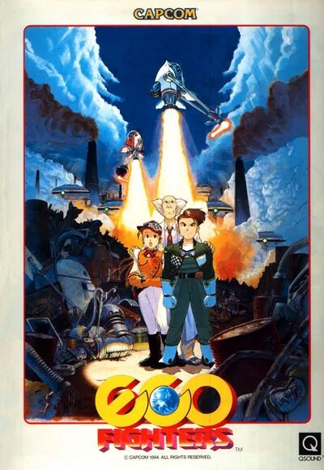
Eco FightersFBA (FinalBurn Alpha)Probando🔎 1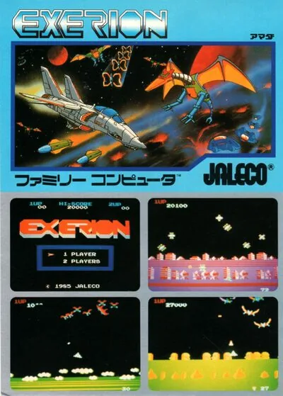
ExerionFBA (FinalBurn Alpha)Probando🔎 2 JoJo's Bizarre Adventure: Heritage for the FutureFBA (FinalBurn Alpha)Probando
JoJo's Bizarre Adventure: Heritage for the FutureFBA (FinalBurn Alpha)Probando Marvel vs. Capcom: Clash of Super HeroesFBA (FinalBurn Alpha)
Marvel vs. Capcom: Clash of Super HeroesFBA (FinalBurn Alpha)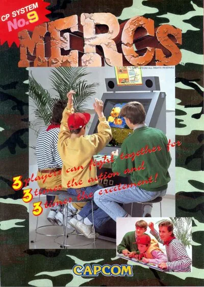
MercsFBA (FinalBurn Alpha)Probando🔎 1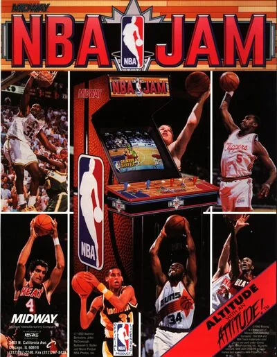
NBA JamFBA (FinalBurn Alpha)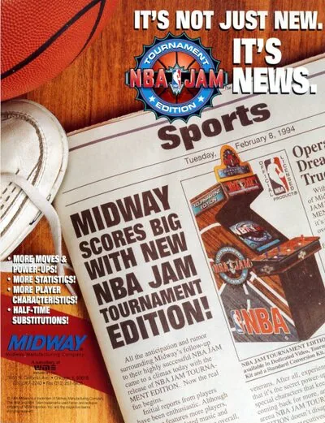
NBA Jam Tournament EditionFBA (FinalBurn Alpha)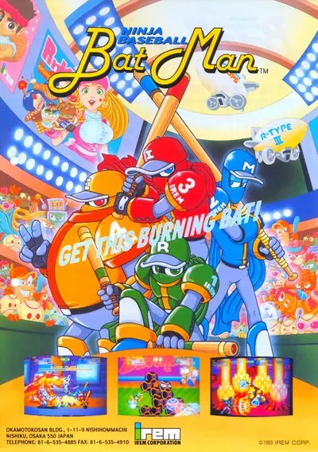
Ninja Baseball Bat ManFBA (FinalBurn Alpha)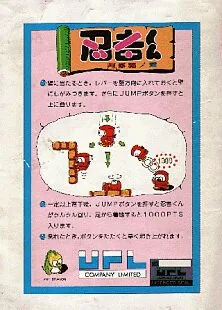
Ninja-Kid IIFBA (FinalBurn Alpha)Probando🔎 2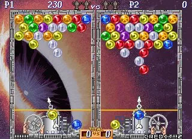
Puzzle Bobble 2FBA (FinalBurn Alpha)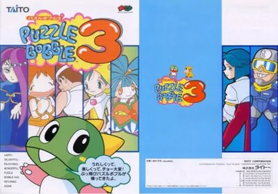
Puzzle Bobble 3FBA (FinalBurn Alpha)Probando🔎 1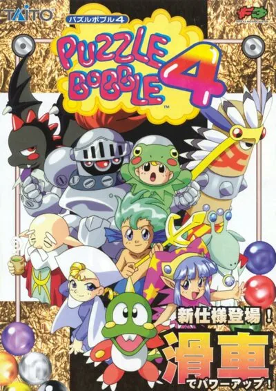
Puzzle Bobble 4FBA (FinalBurn Alpha)Probando🔎 1
Ver los otros 9
- Arabian Fight MAME (lr-mame2003)
- Battletoads MAME (lr-mame2003)
- Express Raider MAME (lr-mame2003)
- Gals Panic MAME (lr-mame2003)
- Golden Axe: The Revenge of Death Adder MAME (lr-mame2003)
- Numan Athletics MAME (lr-mame2003)
- Run and Gun MAME (lr-mame2003)
- Space Harrier MAME (lr-mame2003)
- Vendetta MAME (lr-mame2003)
5 de noviembre de 2026 · 6 juegos
4 de noviembre de 2026 · 111 juegos
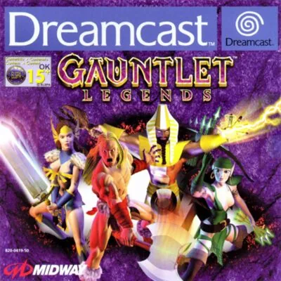
Gauntlet LegendsDreamcast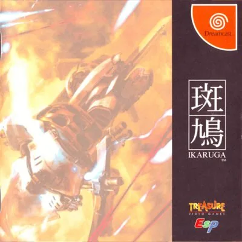
IkarugaDreamcast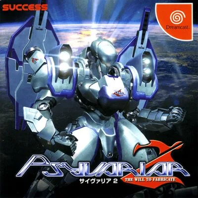
Psyvariar 2: The Will to FabricateDreamcast🔎 2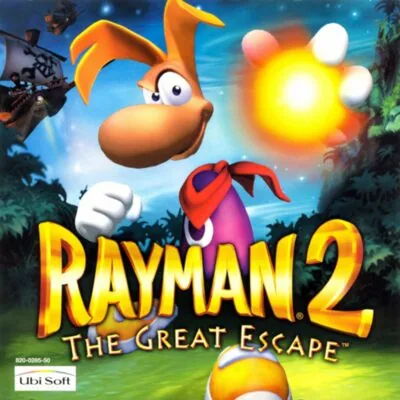
Rayman 2: The Great EscapeDreamcast🔎 1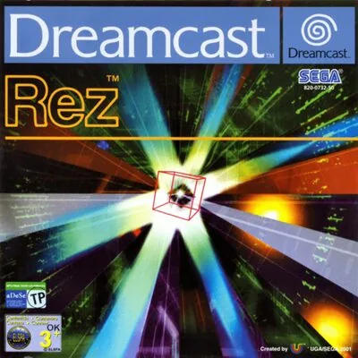
RezDreamcast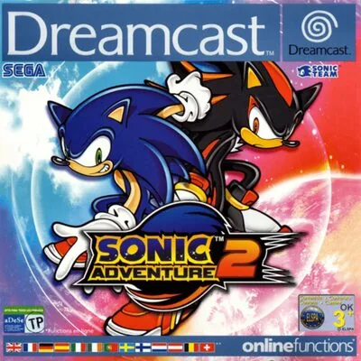
Sonic Adventure 2Dreamcast🔎 1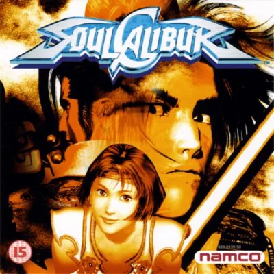
SoulCaliburDreamcast🔎 3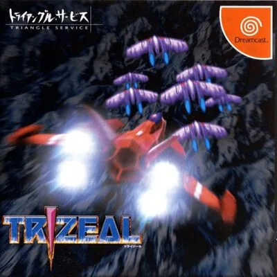
TrizealDreamcast🔎 3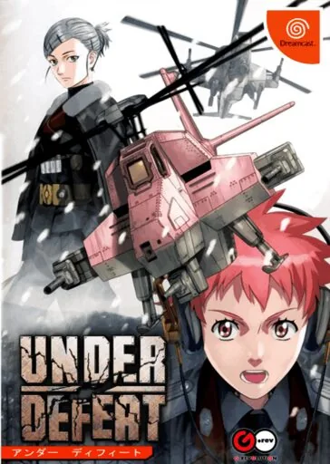
Under DefeatDreamcast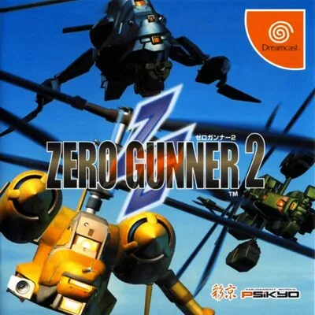
Zero Gunner 2Dreamcast Mortal KombatFBA (FinalBurn Alpha)
Mortal KombatFBA (FinalBurn Alpha) Mortal Kombat IiFBA (FinalBurn Alpha)
Mortal Kombat IiFBA (FinalBurn Alpha)
Ver los otros 99
- Tehkan World Cup FBA (FinalBurn Alpha)
- Rayman 3: Hoodlum Havoc Game Boy Advance
- Rayman Advance Game Boy Advance
- Gals Pinball MAME (lr-mame2003)
- Pinball Action MAME (lr-mame2003)
- Speed Ball MAME (lr-mame2003)
- The King of Fighters 10th Anniversary (The King of Fighters 2002 bootleg) Neo Geo
- The King of Fighters 10th Anniversary Extra Plus Neo Geo
- The King of Fighters 2000 (NGM-2570 ~ NGH-2570) Neo Geo
- The King of Fighters 2001 Neo Geo
- The King of Fighters 2002 Neo Geo
- The King of Fighters 2002 Magic Plus (bootleg) Neo Geo
- The King of Fighters 2002 Magic Plus II (bootleg) Neo Geo
- The King of Fighters 2002 Plus (bootleg set 1) Neo Geo
- The King of Fighters 2003 Neo Geo
- The King of Fighters 2004 Plus / Hero (The King of Fighters 2003 bootleg) Neo Geo
- The King of Fighters 2004 Ultra Plus Neo Geo
- The King of Fighters Special Edition 2004 Neo Geo
- The Last Blade Neo Geo
- The Last Blade 2 Neo Geo
- The Super Spy Neo Geo
- The Ultimate 11 - The SNK Football Championship Neo Geo
- Thrash Rally Neo Geo
- Top Hunter - Roddy & Cathy Neo Geo
- Treasure of the Caribbean Neo Geo
- Twinkle Star Sprites Neo Geo
- Viewpoint Neo Geo
- Voltage Fighter - Gowcaizer Neo Geo
- Waku Waku 7 Neo Geo
- Windjammers Neo Geo
- World Heroes Neo Geo
- World Heroes 2 Neo Geo
- World Heroes 2 Jet Neo Geo
- World Heroes Perfect Neo Geo
- Zed Blade - Operation Ragnarok Neo Geo
- Zintrick / Oshidashi Zentrix (bootleg of CD version) Neo Geo
- Zupapa! Neo Geo
- Bomberman '93 PC Engine
- Cadash PC Engine
- Chou Jikuu Yousai Macross 2036 PC Engine
- Coryoon - Child of Dragon PC Engine
- Cosmic Fantasy II PC Engine
- Devil's Crush PC Engine
- Gomola Speed PC Engine
- Magical Chase PC Engine
- Mizubaku Dai Bouken PC Engine
- Momotarou Katsugeki PC Engine
- New Adventure Island PC Engine
- PC Genjin 3 - Pithecanthropus Computerurus PC Engine
- Pop'n Magic PC Engine
- Psychic Storm PC Engine
- Seirei Senshi Spriggan PC Engine
- Soldier Blade PC Engine
- Splatterhouse PC Engine
- The Legendary Axe PC Engine
- The Legendary Axe II PC Engine
- Ys Book I & II PC Engine
- Astro Boy PSP
- BlazBlue: Calamity Trigger PSP
- BlazBlue: Continuum Shift Extend PSP
- BlazBlue: Continuum Shift II PSP
- Bleach: Heat the Soul PSP
- Bleach: Heat the Soul 2 PSP
- Bleach: Heat the Soul 3 PSP
- Bleach: Heat the Soul 4 PSP
- Bleach: Heat the Soul 5 PSP
- Bleach: Heat the Soul 6 PSP
- Bleach: Heat the Soul 7 PSP
- Bubble Bobble Evolution PSP
- Castlevania The Dracula X Chronicles PSP
- CID: The Dummy PSP
- Cloudy with a Chance of Meatballs PSP
- Crash Tag Team Racing PSP
- Crush PSP
- Darius Burst PSP
- Daxter PSP
- Death Jr. PSP
- Def Jam: Fight for NY - The Takeover PSP
- Downstream Panic! PSP
- Dynasty Warriors: Strikeforce PSP
- Exit PSP
- Exit 2 PSP
- Kao Challengers PSP
- Kingdom of Paradise PSP
- LEGO Indiana Jones 2: The Adventure Continues PSP
- LittleBigPlanet PSP
- Lumines PSP
- Lumines II PSP
- Mega Man Powered Up PSP
- Metal Slug XX PSP
- Pac-Man World 3 PSP
- Pac-Man World Rally PSP
- Prinny 2: Dawn of Operation Panties, Dood! PSP
- Prinny: Can I Really Be the Hero? PSP
- Spectral vs Generation PSP
- Super Fruit Fall PSP
- The 3rd Birthday PSP
- Tokobot PSP
- Xtreme Party PSP
3 de noviembre de 2026 · 64 juegos
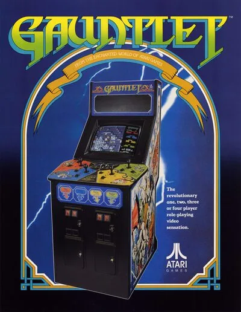
GauntletFBA (FinalBurn Alpha)Probando🔎 1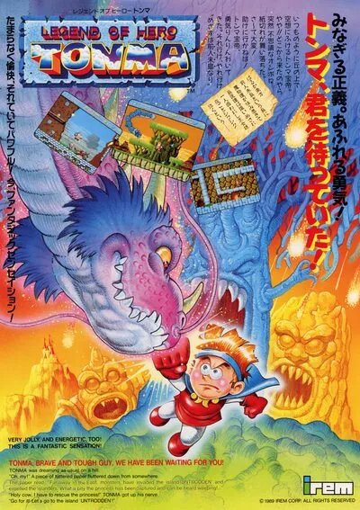
Legend of Hero TonmaFBA (FinalBurn Alpha) Ninja SpiritFBA (FinalBurn Alpha)
Ninja SpiritFBA (FinalBurn Alpha) Parodius DA!FBA (FinalBurn Alpha)
Parodius DA!FBA (FinalBurn Alpha) R-TypeFBA (FinalBurn Alpha)Probando
R-TypeFBA (FinalBurn Alpha)Probando Mario Bros.MAME (lr-mame2003)Probando
Mario Bros.MAME (lr-mame2003)Probando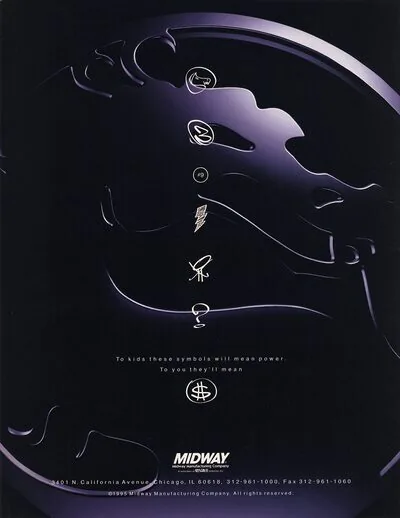
Mortal Kombat 3MAME (lr-mame2003)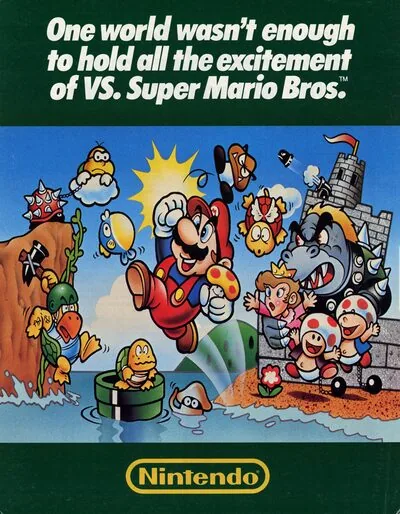
Vs. Super Mario Bros.MAME (lr-mame2003)Probando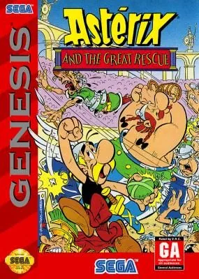
Astérix and the Great RescueMega Drive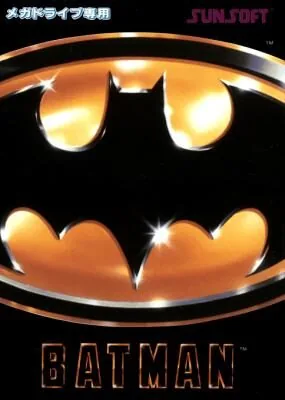
BatmanMega Drive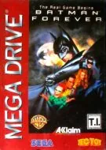
Batman ForeverMega Drive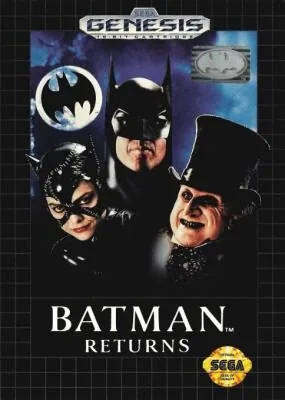
Batman ReturnsMega Drive
Ver los otros 52
- Batman: Revenge of The Joker Mega Drive
- Boogerman: A Pick and Flick Adventure Mega Drive
- Castle of Illusion Starring Mickey Mouse Mega Drive
- Comix Zone Mega Drive
- Disney's Aladdin Mega Drive
- Dynamite Headdy Mega Drive
- Earthworm Jim Mega Drive
- Earthworm Jim 2 Mega Drive
- Garfield: Caught in the Act Mega Drive
- Ghouls'n Ghosts Mega Drive
- Gunstar Heroes Mega Drive
- Kid Chameleon Mega Drive
- Les Schtroumpfs Mega Drive
- Les Schtroumpfs autour du monde Mega Drive
- Michael Jackson's Moonwalker Mega Drive
- Mick & Mack as the Global Gladiators Mega Drive
- Mickey Mania: The Timeless Adventures of Mickey Mouse Mega Drive
- Mickey's Ultimate Challenge Mega Drive
- Mr. Nutz Mega Drive
- Psycho Pinball Mega Drive
- Ristar Mega Drive
- Rocket Knight Adventures Mega Drive
- Sonic & Knuckles Mega Drive
- Sonic 3D Blast Mega Drive
- Sonic the Hedgehog Mega Drive
- Sonic the Hedgehog 2 Mega Drive
- Sonic the Hedgehog 3 Mega Drive
- Sonic the Hedgehog Spinball Mega Drive
- Sparkster Mega Drive
- Spider-Man & Venom : Maximum Carnage Mega Drive
- Spider-Man & Venom : Separation Anxiety Mega Drive
- Spider-Man the Animated Series Mega Drive
- Teenage Mutant Ninja Turtles : The Hyperstone Heist Mega Drive
- Teenage Mutant Ninja Turtles: Tournament Fighters Mega Drive
- The Adventures of Batman & Robin Mega Drive
- The Flintstones Mega Drive
- The Lion King Mega Drive
- The Misadventures of Flink Mega Drive
- TinHead Mega Drive
- World of Illusion starring Mickey Mouse and Donald Duck Mega Drive
- Chameleon Twist 2 Nintendo 64
- Donkey Kong 64 Nintendo 64
- Earthworm Jim 3D Nintendo 64
- Kirby 64 - The Crystal Shards Nintendo 64
- Legend of Zelda, The - Majora's Mask Nintendo 64
- Mario Kart 64 Nintendo 64
- Paper Mario Nintendo 64
- Perfect Dark Nintendo 64
- Super Mario 64 Nintendo 64
- Super Smash Bros Nintendo 64
- Yoshi's Story Nintendo 64
- Space Invaders Extreme PSP
2 de noviembre de 2026 · 211 juegos
- Gallop - Cosmic Cop FBA (FinalBurn Alpha)
- Gauntlet II FBA (FinalBurn Alpha)
- Green Beret FBA (FinalBurn Alpha)
- Gunbird FBA (FinalBurn Alpha)
- Guwange FBA (FinalBurn Alpha)
- Hammerin' Harry FBA (FinalBurn Alpha)
- Hard Head 2 FBA (FinalBurn Alpha)
- Insector X FBA (FinalBurn Alpha)
- Joe & Mac Returns FBA (FinalBurn Alpha)
- Karnov FBA (FinalBurn Alpha)
- Knights of the Round FBA (FinalBurn Alpha)
- Kung-Fu Master FBA (FinalBurn Alpha)
- Mega Twins FBA (FinalBurn Alpha)
- Moon Cresta FBA (FinalBurn Alpha)
- Mutant Night FBA (FinalBurn Alpha)
- Mystic Riders FBA (FinalBurn Alpha)
- Mystic Warriors FBA (FinalBurn Alpha)
- Nemo FBA (FinalBurn Alpha)
- Ordyne FBA (FinalBurn Alpha)
- Out Run FBA (FinalBurn Alpha)
- Pac-Man FBA (FinalBurn Alpha)
- Pac-Man Plus FBA (FinalBurn Alpha)
- Pac-Mania FBA (FinalBurn Alpha)
- Pang FBA (FinalBurn Alpha)
- Pang! 3 FBA (FinalBurn Alpha)
- Popeye FBA (FinalBurn Alpha)
- Prehistoric Isle in 1930 FBA (FinalBurn Alpha)
- R-Type II FBA (FinalBurn Alpha)
- R-Type Leo FBA (FinalBurn Alpha)
- Rail Chase FBA (FinalBurn Alpha)
- Rainbow Islands FBA (FinalBurn Alpha)
- Rastan FBA (FinalBurn Alpha)
- Riot City FBA (FinalBurn Alpha)
- Robocop FBA (FinalBurn Alpha)
- Robocop 2 FBA (FinalBurn Alpha)
- Rygar FBA (FinalBurn Alpha)
- Shadow Dancer FBA (FinalBurn Alpha)
- Shinobi FBA (FinalBurn Alpha)
- Side Arms - Hyper Dyne FBA (FinalBurn Alpha)
- Sly Spy (US revision 4) FBA (FinalBurn Alpha)
- Snow Bros. - Nick & Tom FBA (FinalBurn Alpha)
- Snow Bros. 2 - With New Elves / Otenki Paradise FBA (FinalBurn Alpha)
- Snow Brothers 3 - Magical Adventure FBA (FinalBurn Alpha)
- Street Fighter Alpha 2 FBA (FinalBurn Alpha)
- Street Fighter Alpha 3 FBA (FinalBurn Alpha)
- Street Fighter Alpha: Warriors' Dreams FBA (FinalBurn Alpha)
- Street Fighter II': Champion Edition FBA (FinalBurn Alpha)
- Street Fighter II': Hyper Fighting FBA (FinalBurn Alpha)
- Street Fighter II: The World Warrior FBA (FinalBurn Alpha)
- Street Fighter III 2nd Impact: Giant Attack FBA (FinalBurn Alpha)
- Street Fighter III 3rd Strike: Fight for the Future FBA (FinalBurn Alpha)
- Street Fighter III: New Generation FBA (FinalBurn Alpha)
- Street Fighter Zero FBA (FinalBurn Alpha)
- Street Fighter Zero 2 Alpha FBA (FinalBurn Alpha)
- Strider FBA (FinalBurn Alpha)
- Sunset Riders FBA (FinalBurn Alpha)
- Super Pac-Man FBA (FinalBurn Alpha)
- Super Pang FBA (FinalBurn Alpha)
- Super Space Invaders '91 FBA (FinalBurn Alpha)
- Super Street Fighter II Turbo FBA (FinalBurn Alpha)
- Super Street Fighter II X: Grand Master Challenge FBA (FinalBurn Alpha)
- Super Street Fighter II: The New Challengers FBA (FinalBurn Alpha)
- Superman FBA (FinalBurn Alpha)
- Teenage Mutant Ninja Turtles FBA (FinalBurn Alpha)
- Teenage Mutant Ninja Turtles - Turtles in Time FBA (FinalBurn Alpha)
- Tetris FBA (FinalBurn Alpha)
- The Astyanax FBA (FinalBurn Alpha)
- The King of Dragons FBA (FinalBurn Alpha)
- The Ninja Kids FBA (FinalBurn Alpha)
- The Punisher FBA (FinalBurn Alpha)
- The Simpsons FBA (FinalBurn Alpha)
- Three Wonders FBA (FinalBurn Alpha)
- Tiger Road FBA (FinalBurn Alpha)
- Toki FBA (FinalBurn Alpha)
- Trojan FBA (FinalBurn Alpha)
- Tumble Pop FBA (FinalBurn Alpha)
- Turbo Out Run FBA (FinalBurn Alpha)
- Undercover Cops FBA (FinalBurn Alpha)
- Violent Storm FBA (FinalBurn Alpha)
- Wild West C.O.W.-Boys of Moo Mesa FBA (FinalBurn Alpha)
- Willow FBA (FinalBurn Alpha)
- Wizard Fire FBA (FinalBurn Alpha)
- Wonder Boy FBA (FinalBurn Alpha)
- Wonder Boy III - Monster Lair FBA (FinalBurn Alpha)
- WWF Superstars FBA (FinalBurn Alpha)
- WWF WrestleFest FBA (FinalBurn Alpha)
- X Multiply FBA (FinalBurn Alpha)
- X-Men FBA (FinalBurn Alpha)
- X-Men Vs. Street Fighter FBA (FinalBurn Alpha)
- Aero Fighters 3 Neo Geo
- Aggressors of Dark Kombat Neo Geo
- Alpha Mission II - Last Guardian Neo Geo
- Andro Dunos Neo Geo
- Art of Fighting Neo Geo
- Art of Fighting 2 Neo Geo
- Art of Fighting 3 - The Path of the Warrior Neo Geo
- Bang Bang Busters Neo Geo
- Bang Bead Neo Geo
- Battle Flip Shot Neo Geo
- Blazing Star Neo Geo
- Blue's Journey Neo Geo
- Breakers Neo Geo
- Breakers Revenge Neo Geo
- Burning Fight Neo Geo
- Captain Tomaday Neo Geo
- Choutetsu Brikin'ger - Iron Clad (prototype) Neo Geo
- Columns Neo Geo
- Crossed Swords Neo Geo
- Crossed Swords 2 (bootleg of CD version) Neo Geo
- Crouching Pony Hidden Dragon Neo Geo
- Cyber-Lip Neo Geo
- Double Dragon Neo Geo
- Eight Man Neo Geo
- Far East of Eden - Kabuki Klash / Tengai Makyou - Shin Den Neo Geo
- Fatal Fury - King of Fighters Neo Geo
- Fatal Fury 2 Neo Geo
- Fatal Fury 3 - Road to the Final Victory Neo Geo
- Fatal Fury Special Neo Geo
- Fight Fever Neo Geo
- Football Frenzy (NGM-034 ~ NGH-034) Neo Geo
- Galaxy Fight - Universal Warriors Neo Geo
- Ganryu Neo Geo
- Garou - Mark of the Wolves (NGM-2530) Neo Geo
- Ghost Pilots (NGM-020 ~ NGH-020) Neo Geo
- Ghostlop Neo Geo
- Goal! Goal! Goal! Neo Geo
- Gururin Neo Geo
- Karnov's Revenge / Fighter's History Dynamite Neo Geo
- Kizuna Encounter - Super Tag Battle Neo Geo
- Last Hope Neo Geo
- Last Resort Neo Geo
- Magical Drop II Neo Geo
- Magical Drop III Neo Geo
- Magician Lord Neo Geo
- Matrimelee Neo Geo
- Metal Slug - Super Vehicle-001 Neo Geo
- Metal Slug 2 - Super Vehicle-001/II Neo Geo
- Metal Slug 3 Neo Geo
- Metal Slug 4 (NGM-2630) Neo Geo
- Metal Slug 5 Neo Geo
- Metal Slug 6 (Metal Slug 3 bootleg) Neo Geo
- Metal Slug X - Super Vehicle-001 (NGM-2500 ~ NGH-2500) Neo Geo
- Money Puzzle Exchanger Neo Geo
- Mutation Nation Neo Geo
- NAM-1975 Neo Geo
- Neo Bomberman Neo Geo
- Neo Drift Out - New Technology Neo Geo
- Neo Mr. Do! Neo Geo
- Neo-Geo Cup '98 - The Road to the Victory Neo Geo
- Nightmare in the Dark Neo Geo
- Ninja Combat Neo Geo
- Ninja Commando Neo Geo
- Ninja Master's Neo Geo
- Over Top Neo Geo
- Panic Bomber Neo Geo
- Pleasure Goal / Futsal - 5 on 5 Mini Soccer (NGM-219) Neo Geo
- Pop 'n Bounce Neo Geo
- Power Spikes II Neo Geo
- Prehistoric Isle 2 Neo Geo
- Pulstar Neo Geo
- Puzzle Bobble / Bust-A-Move (Neo-Geo, NGM-083) Neo Geo
- Puzzle Bobble 2 Neo Geo
- Puzzle De Pon! Neo Geo
- Rage of the Dragons Neo Geo
- Ragnagard Neo Geo
- Real Bout Fatal Fury Neo Geo
- Real Bout Fatal Fury 2 - The Newcomers Neo Geo
- Real Bout Fatal Fury Special Neo Geo
- Riding Hero Neo Geo
- Robo Army Neo Geo
- Samurai Shodown Neo Geo
- Samurai Shodown II Neo Geo
- Samurai Shodown III Neo Geo
- Samurai Shodown IV - Amakusa's Revenge Neo Geo
- Samurai Shodown V Neo Geo
- Samurai Shodown V Special / Samurai Spirits Zero Special (NGM-2720) Neo Geo
- Savage Reign / Fu'un Mokushiroku - Kakutou Sousei Neo Geo
- Sengoku Neo Geo
- Sengoku 2 / Sengoku Denshou 2 Neo Geo
- Sengoku 3 Neo Geo
- Shock Troopers Neo Geo
- Shock Troopers - 2nd Squad Neo Geo
- SNK vs. Capcom - SVC Chaos Neo Geo
- SNK vs. Capcom - SVC Chaos Plus Neo Geo
- SNK vs. Capcom - SVC Chaos Super Plus (bootleg) Neo Geo
- Soccer Brawl Neo Geo
- Spin Master Neo Geo
- Street Hoop Neo Geo
- Strikers 1945 Neo Geo
- Super Dodge Ball Neo Geo
- Super Sidekicks Neo Geo
- Super Sidekicks 2 - The World Championship Neo Geo
- Super Sidekicks 3 - The Next Glory Neo Geo
- Tecmo World Soccer '96 Neo Geo
- The Irritating Maze / Ultra Denryu Iraira Bou Neo Geo
- The King of Fighters '94 Neo Geo
- The King of Fighters '95 Neo Geo
- The King of Fighters '96 Neo Geo
- The King of Fighters '97 Neo Geo
- The King of Fighters '98 - The Slugfest Neo Geo
- The King of Fighters '99 - Millennium Battle Neo Geo
- The King of Fighters 10th Anniversary 2005 Unique Neo Geo
- The King of Fighters 2001 Plus Neo Geo
- The King of Fighters 2002 Super Neo Geo
- The King of Fighters Special Edition 2004 Plus Neo Geo
- Castlevania: Symphony of the Night PlayStation
- Panzer Bandit PlayStation
- Pink Panther - Pinkadelic Pursuit PlayStation
- Rapid Reload PlayStation
- Rayman PlayStation
- The Adventures of Lomax PlayStation
31 de octubre de 2026 · 5 juegos
- Crash Bandicoot PlayStation
- Pac-Man World PlayStation
- R-Type Delta PlayStation
- Rayman 2 - The Great Escape PlayStation
- Rayman Rush PlayStation
26 de octubre de 2026 · 61 juegos
- Batman Amstrad CPC
- Head Over Heels Amstrad CPC
- Prince of Persia Amstrad CPC
- Target: Renegade Amstrad CPC
- Three Weeks in Paradise Amstrad CPC
- Wonder Boy Amstrad CPC
- Bubble Bobble FBA (FinalBurn Alpha)
- Cabal FBA (FinalBurn Alpha)
- Cadash FBA (FinalBurn Alpha)
- Cadillacs and Dinosaurs FBA (FinalBurn Alpha)
- Captain Commando FBA (FinalBurn Alpha)
- Caveman Ninja FBA (FinalBurn Alpha)
- Commando FBA (FinalBurn Alpha)
- Contra FBA (FinalBurn Alpha)
- Crude Buster FBA (FinalBurn Alpha)
- Dark Seal FBA (FinalBurn Alpha)
- Demon's World / Horror Story FBA (FinalBurn Alpha)
- DoDonPachi FBA (FinalBurn Alpha)
- Don Doko Don FBA (FinalBurn Alpha)
- Donkey Kong FBA (FinalBurn Alpha)
- Donkey Kong 3 FBA (FinalBurn Alpha)
- Donkey Kong II - Jumpman Returns FBA (FinalBurn Alpha)
- Double Dragon FBA (FinalBurn Alpha)
- Double Dragon 3 - The Rosetta Stone FBA (FinalBurn Alpha)
- Double Dragon II - The Revenge FBA (FinalBurn Alpha)
- Dragon Breed FBA (FinalBurn Alpha)
- Dragon Saber FBA (FinalBurn Alpha)
- Dragon Spirit FBA (FinalBurn Alpha)
- Dungeons & Dragons: Shadow over Mystara FBA (FinalBurn Alpha)
- Dungeons & Dragons: Tower of Doom FBA (FinalBurn Alpha)
- Dynamite Düx FBA (FinalBurn Alpha)
- Final Fight FBA (FinalBurn Alpha)
- Final Star Force FBA (FinalBurn Alpha)
- Galaga FBA (FinalBurn Alpha)
- Galaga '88 FBA (FinalBurn Alpha)
- Galaga 3 FBA (FinalBurn Alpha)
- Galaxian FBA (FinalBurn Alpha)
- Gaplus FBA (FinalBurn Alpha)
- Ghosts'n Goblins FBA (FinalBurn Alpha)
- Ghouls'n Ghosts FBA (FinalBurn Alpha)
- Golden Axe FBA (FinalBurn Alpha)
- Gun.Smoke FBA (FinalBurn Alpha)
- Gunbird 2 FBA (FinalBurn Alpha)
- Hard Head FBA (FinalBurn Alpha)
- Hook FBA (FinalBurn Alpha)
- In The Hunt FBA (FinalBurn Alpha)
- Rayman Raving Rabbids Game Boy Advance
- Rayman: Hoodlums' Revenge Game Boy Advance
- Mickey's Racing Adventure Game Boy Color
- Mickey's Speedway USA Game Boy Color
- Hot Pinball MAME (lr-mame2003)
- Animaniacs Mega Drive
- Asterix and the Power of the Gods Mega Drive
- 3 Count Bout Neo Geo
- Aero Fighters 2 / Sonic Wings 2 Neo Geo
- Banjo-Kazooie Nintendo 64
- Castlevania Nintendo 64
- Akumajou Dracula X - Chi no Rondo PC Engine
- Alien Crush PC Engine
- Ape Academy PSP
- Asterix & Obelix XXL 2: Mission Wifix PSP
25 de octubre de 2026 · 25 juegos
- 1943: The Battle of Midway FBA (FinalBurn Alpha)
- Aero Fighters FBA (FinalBurn Alpha)
- After Burner FBA (FinalBurn Alpha)
- After Burner II FBA (FinalBurn Alpha)
- Alex Kidd: The Lost Stars FBA (FinalBurn Alpha)
- Alien Storm FBA (FinalBurn Alpha)
- Alien vs. Predator FBA (FinalBurn Alpha)
- Aliens FBA (FinalBurn Alpha)
- Altered Beast FBA (FinalBurn Alpha)
- Arkanoid FBA (FinalBurn Alpha)
- Arkanoid - Revenge of DOH FBA (FinalBurn Alpha)
- Arkanoid Returns FBA (FinalBurn Alpha)
- Asterix FBA (FinalBurn Alpha)
- Athena FBA (FinalBurn Alpha)
- Avengers FBA (FinalBurn Alpha)
- Avenging Spirit FBA (FinalBurn Alpha)
- Big Karnak FBA (FinalBurn Alpha)
- Biomechanical Toy FBA (FinalBurn Alpha)
- Black Tiger FBA (FinalBurn Alpha)
- Blade Master FBA (FinalBurn Alpha)
- Block Block FBA (FinalBurn Alpha)
- Blood Bros. FBA (FinalBurn Alpha)
- Bomb Jack FBA (FinalBurn Alpha)
- Bombjack Twin FBA (FinalBurn Alpha)
- Bubble Bobble II FBA (FinalBurn Alpha)